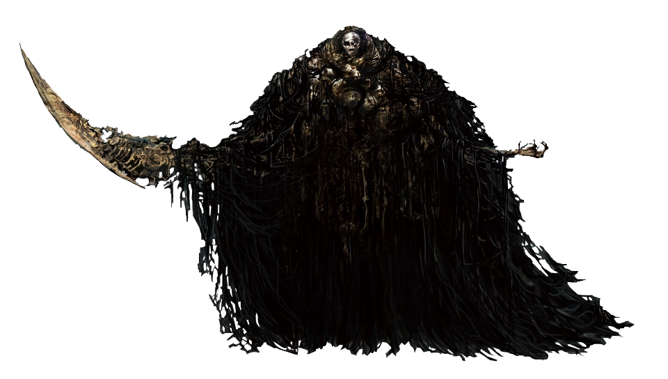
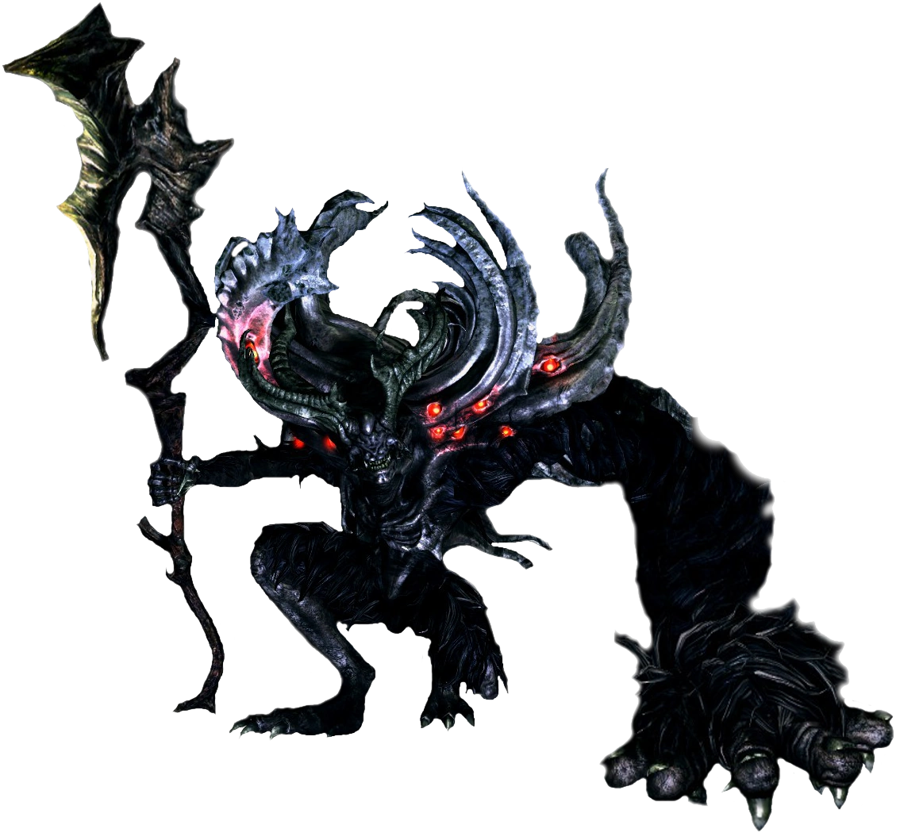
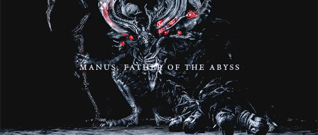

Our next meeting is at the Chasm of the Abyss in Oolacile Township.
Remember to bring your catalysts and be prepared to learn abyssal sorceries

You are not to speak of this to anyone
If one is to learn of this, you know the procedure
MAKE SURE you are not followed
You know the consequences
Hail the Father of the Abyss

May Manus bless us

Return to Lordran